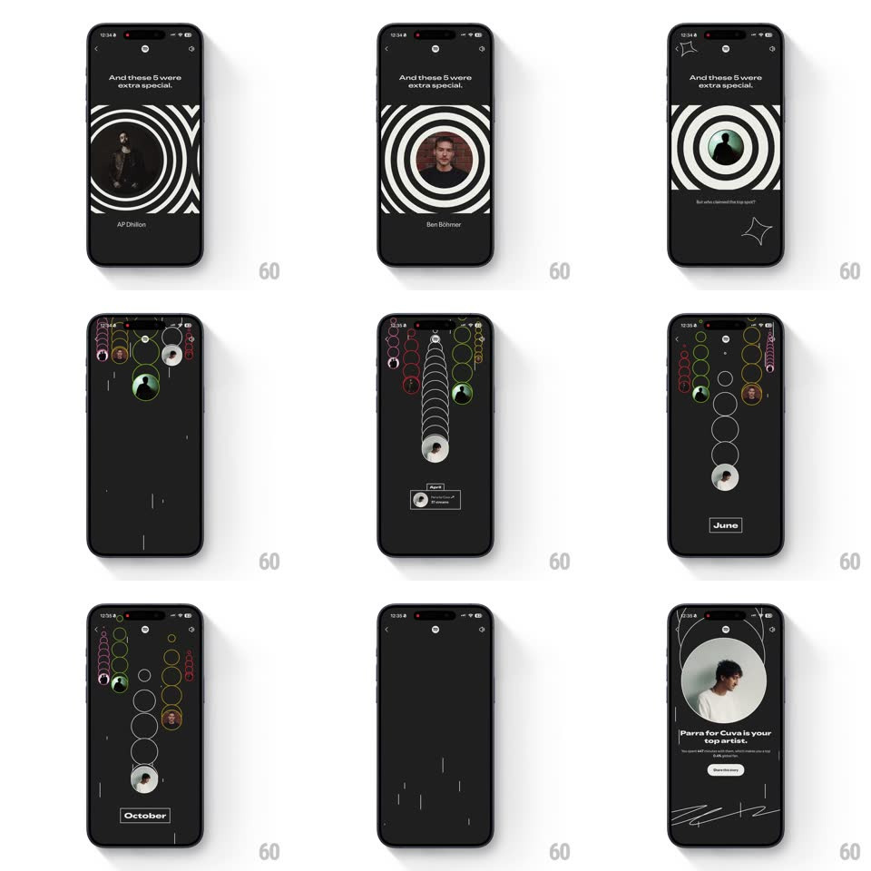

Media
Frame-by-frame

Rebuild this animation 1:1: Spotify Wrapped's top-artists race - the spiral intro gives way to a vertical race where artist circles climb their lanes, months ticking by, until the top artist takes the screen.

Rebuild this animation 1:1: Spotify Wrapped's top-artists race - the spiral intro gives way to a vertical race where artist circles climb their lanes, months ticking by, until the top artist takes the screen.
## Integration
Integration: stack-agnostic spec - springs given as stiffness/damping, timed motions as duration + curve; map every value to your framework and animation library of choice.
## Scene
A black Wrapped story: "You listened to 837 artists this year." over a white spiral field; then "And these 5 were extra special." with artist portraits inside spiral rings (Parra for Cuva, Ben Böhmer...). The race: five vertical lanes of colored rings, artist avatars climbing them while a month label (April... June) sits at the bottom. Finale: a huge artist portrait with "Parra for Cuva is your top artist." and the minutes-listened line.
## Motion spec
Pattern: gamified vertical race - lanes draw, avatars climb, winner expands.
- The spiral intro pulses (rings scale 1 -> 1.05, 1.6s loop) behind the copy; portraits pop into the spiral centers one at a time (scale 0 -> 1.1 -> 1, spring ~360/15, 150ms apart).
- Transition to the race: the spiral rings stretch into five vertical lane tracks (each ring column slides apart, 500ms, ease-in-out) as the screen's bottom stamps the starting month.
- The race runs: avatar circles climb their lanes with springy surges (translateY with spring ~300/14 per surge), rings stacking behind each climber like a trail; the month label flips forward (April -> May -> June, vertical roll, 200ms) as positions swap - leaders overtake mid-race.
- The winner's lane surges last and its avatar expands (scale 1 -> 4, 450ms, ease-in-out) to fill the top of the screen, resolving into the finale card: portrait, "is your top artist", and stats fading up beneath (staggered 100ms).
- Story chrome (progress pills, close, share) stays fixed the whole time.
## Calibration
- The race must feel contested - at least one overtake before the winner pulls away.
- Each lane keeps its own ring color end to end - the trail is how you read the race.
## Reduced motion
Skip the race: crossfade from the five portraits to the finale card (400ms).
## Don't miss
- The finale copy is personal and second-person ("is your top artist") - never "Top artist: X".
- The month ticker anchors the race in time - without it the climb is abstract.